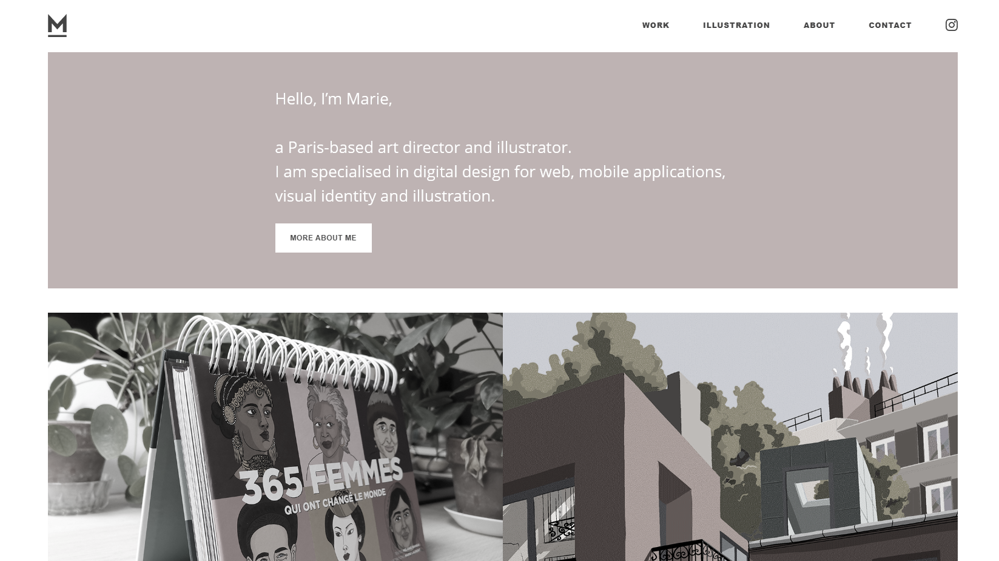
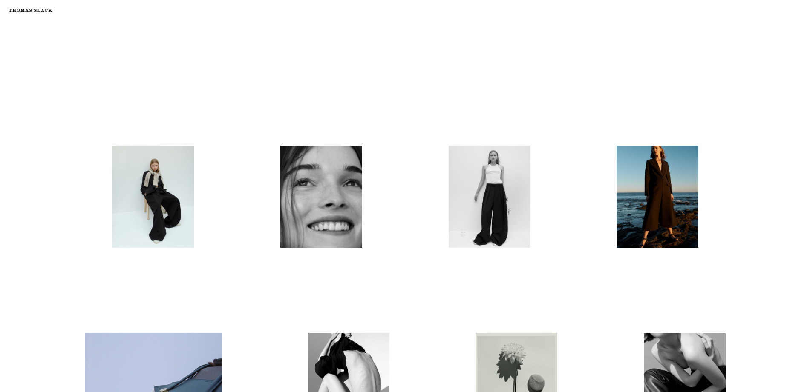
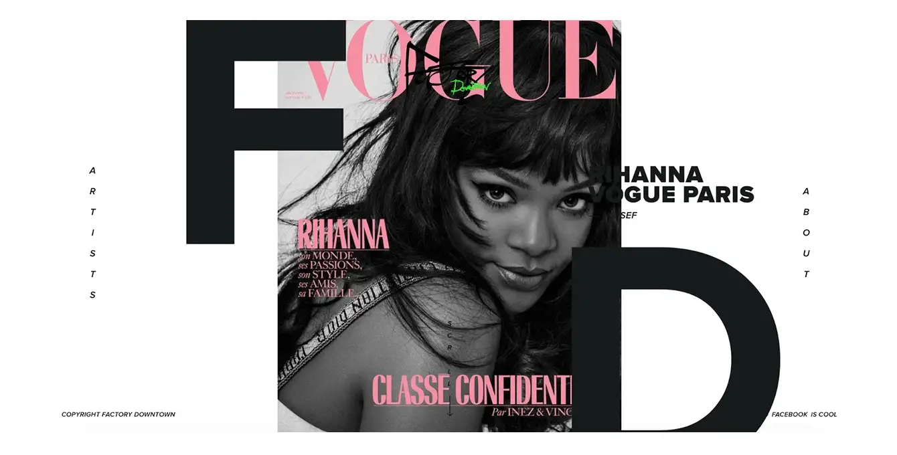

What is Minimalism?
Minimalism is defined as a design or style in which the simplest and fewest elements are used to create the maximum effect. Minimalism had its origins in the arts—with the artwork featuring simple lines, only a few colors, and careful placement of those lines and colors.
More recently, it has become representative of a lifestyle that aims to remove clutter from all facets of life.
Minimalism is all about owning only what adds value and meaning to your life (as well as the lives of the people you care about) and removing the rest. It’s about removing the clutter and using your time and energy for the things that remain. We only have a certain amount of energy, time, and space in our lives. In order to make the most of it, we must be intentional about how we’re living each day.
Whitespace, or negative space (which would be the more appropriate design term), is the space between elements in a composition. There are many benefits to using whitespace, but first and foremost, it improves the user experience and concentrates attention on webpage content and your product.


Whitespace adds balance to a design. By being conscious about what occupies the space between your website’s main content blocks, you can make your site captivate readers, inviting them to stay longer and scroll further.
Having a lot of whitespace is one of the main tricks to a minimalist style.
Look at the beautiful implementation of whitespace on the website of Thomas Slack, an LA fashion and portrait photographer. There’s nothing to distract users from the inspiring beauty of his work.
Font size is another important aspect of minimalist design, especially if there aren’t many other elements on the page. Using small fonts can be a great way of presenting information without taking up too much space. However, be careful, as small text can easily get lost on the page and make the design appear dirty and distracting.
Look at the example below, a website that belongs to the FactoryDowntown artist management agency. Although it looks stylish and minimalist, the black font they use on the white background can be hard to read on some magazine covers. Another interesting detail is that sometimes letters cover models’ faces and magazine titles, which in a way communicates that the work was done by this particular agency.
We can’t just leave the website without mentioning the great solution they implemented for the “Artists” menu, but telling you why it’s worth mentioning wouldn’t be fair. Go check it out yourself!

On the where Mountains Meet website, you can see a good example of grouping information in blocks.